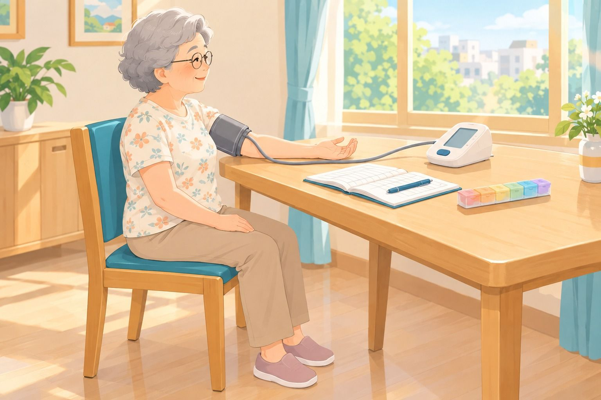
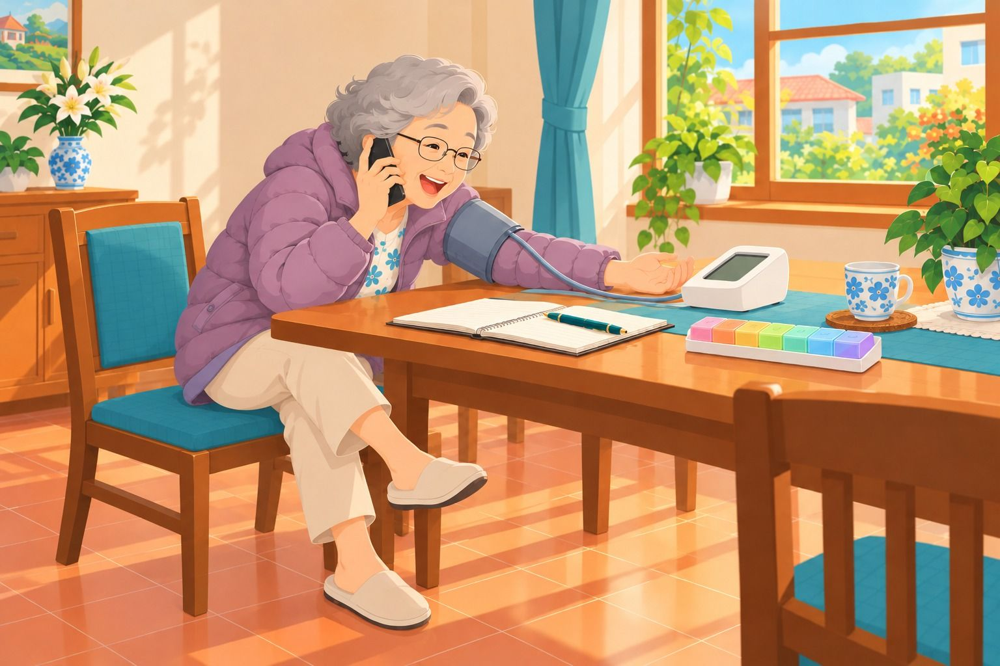

血壓計上的 3 個數字
點一下螢幕上的數字，看看它叫什麼。
👆 點上面的數字
血壓紅綠燈（在家量的標準）
兩個數字，只要有一個超過，就算。已經在吃藥的人，目標照醫師交代。
🟢
正常：低於 120/80
繼續保持，定期量。🟡
要注意：超過 120/80，還沒到 130/80
早晚量、寫紀錄，少鹹、多活動。🔴
偏高：在家量 130/80 以上
照 722 量一週，帶著紀錄去給醫師看。🚨
緊急：突然很高，又有不舒服
胸痛、臉歪、手無力、講話不清楚：記下時間，馬上打 119。🧮 幫我看看：我量到的數字
輸入在家量到的血壓（不會上傳、不會儲存）。
/
資料來源：2022 台灣高血壓治療指引（台灣心臟學會、台灣高血壓學會，以居家血壓 130/80 為高血壓標準）；衛福部國民健康署（正常血壓應小於 120/80）。本頁為衛教資訊，不能取代醫師診斷。
量之前 5 件事，量的時候 5 句口訣
☕半小時內
不喝咖啡、茶
不喝咖啡、茶
🚭半小時內
不抽菸
不抽菸
🏃半小時內
不運動
不運動
🚻先上廁所
🪑坐著休息
5 分鐘
5 分鐘

👆 點口訣或圖上的號碼，可以放大看細節。
這樣量，對嗎？找出 4 個錯誤
圖上有 8 個號碼，其中 4 個做錯了。點號碼看放大特寫，先想一想再看答案。

已找到 0 / 4 個錯誤
在家量：722
7連續 7 天
（例如回診前一週）
（例如回診前一週）
2早晚各 1 次
（起床後、睡前）
（起床後、睡前）
2每次量 2 遍
（隔 1 分鐘）
（隔 1 分鐘）
⏰ 什麼時候量？
早上：起床 1 小時內、上完廁所、吃藥和早餐之前。晚上：睡前 1 小時內。量多少就寫多少，高的低的都要寫，醫師才看得到真相。覺得太高，先坐著休息 5 分鐘再量，兩次都記下來。
📒 722 紀錄表（可列印）
A4 橫式一張，七天份。印出來貼冰箱，回診時帶給醫師看。
| 日期 | 早上 第 1 遍／第 2 遍 | 晚上 第 1 遍／第 2 遍 | 備註 | ||
|---|---|---|---|---|---|
| 1 | 2 | 1 | 2 | ||
| 11/2 | 132/84 ♥72 | 128/82 ♥70 | 126/80 ♥68 | 124/78 ♥66 | 吃藥前 |
資料來源：衛福部國民健康署「722 原則」；2022 台灣高血壓治療指引。
有的改不動，有的改得動
🔒 改不動
年紀（血管變硬）、體質（家族史）、天氣（天冷血管收縮）。🔑 改得動
口味（少鹹、湯汁少喝）、身形（腰圍與體重）、菸酒（戒菸、少喝酒）。⚠️ 一直沒控制，會怎樣？
高血壓的人，中風風險約 2.8 倍、心臟病約 1.9 倍、腎臟病約 1.7 倍。好消息是：控制好，風險就降下來。資料來源：衛福部「高血壓是無聲殺手」衛教資料（高血壓者 5 年內罹病風險比）。
血壓偏高，5 個步驟
1先坐下休息，隔一下再量一遍確認
2連續七天早晚量，把數字通通記下來
3帶著血壓紀錄去看醫師
4照醫師交代吃藥，藥快吃完先回診
5繼續量、繼續記，回診再給醫師看
🚨 不用排步驟的時候
血壓突然很高，又有胸痛、臉歪、手無力、講話不清楚：記下時間，馬上打 119。對還是不對？5 題快問快答
看診時間短，先寫好想問的
勾選想問的，截圖或抄在紀錄本第一頁，連同紀錄本一起帶去。
兩部紙劇場小電影
看看阿雪姨和阿坤伯，哪裡做錯了？
① 阿雪姨量血壓（1 分 27 秒）
② 阿坤伯看醫生（1 分 30 秒）
這些都是您的權益
📍 722 安心血壓站
藥局、超商、農會、活動中心等，免費量血壓。🩺 免費成人健檢
65 歲以上每年一次，量血壓、驗血糖血脂。📄 慢性處方箋
血壓穩定可請醫師開慢箋，少跑幾趟。☎️ 長照專線 1966
問照顧、問服務、問補助。資料來源：國民健康署（722 安心血壓站、成人預防保健服務）；衛福部長照專線 1966。資格與地點以衛生所公告為準。
🚑 119
突然臉歪、手軟、講話不清楚，或胸痛、喘不過氣：不要等、不要自己吃藥，馬上打 119，記下症狀開始的時間。